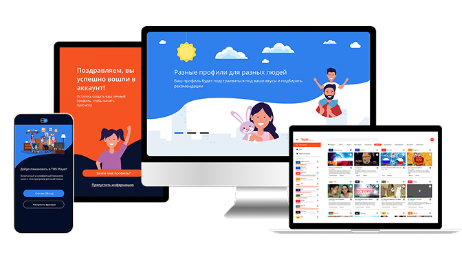
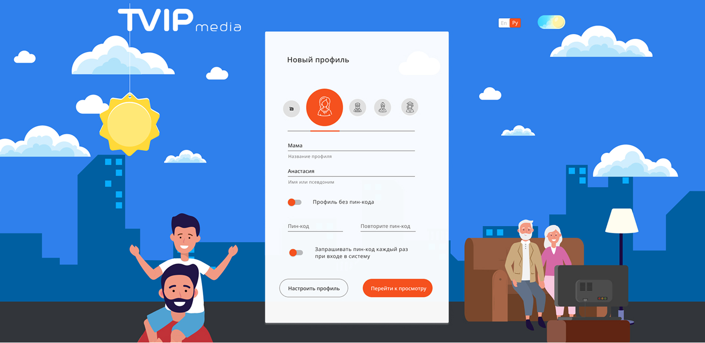
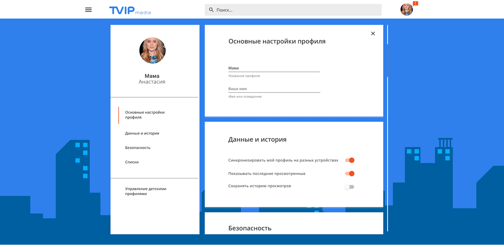
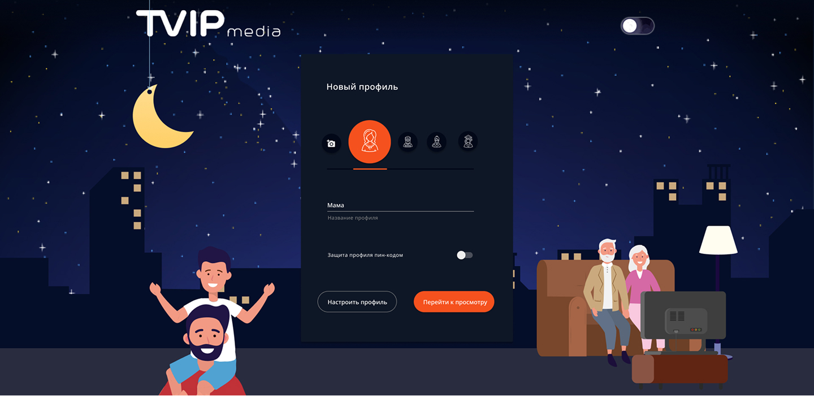
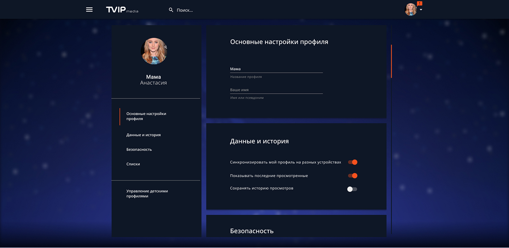

Case Study
WUW
Эволюция продукта через системный подход к дизайну
Платформа для личностного роста. 5000+ пользователей.
Кроссплатформенный медиасервис для 5 устройств

Готовый MVP с обширным бэкендом, но устаревшим интерфейсом. Я пришла на проект уже при наличии работающего продукта.
Один интерфейс для всех — от семейного просмотра на ТВ до индивидуального на смартфоне. Не было персонализации.
«Задача — не сломать работающее, но сделать современным.»
Формулировка персон для системы профилей
ТВ, вечер
Смартфон, транспорт
Планшет, работа
ПК, архив
Роли зрителей в домашнем контексте — основа для сценариев и профилей


Боли
1 / 10
Сформирована доска запрашиваемых функций, сгруппированных по персонам. Это стало основой для создания системы профилей внутри одного сервиса.
Профили как персонализированные пространства
Каждый профиль имеет уникальный набор настроек и предпочтений
Персонализированный контент на основе просмотров каждого профиля
Возможность ограничивать контент для детских профилей
Мгновенный переход между профилями без перезагрузки
Профили стали не просто «именами», а полноценными персонализированными пространствами
5 устройств — один опыт
Тот же UI-kit в формате «второго экрана» и онлайн-просмотра

Компоненты, адаптирующиеся под размеры и способы взаимодействия. Одна дизайн-система для всех платформ с учетом особенностей каждого контекста.
Учёт разных условий просмотра




Тема меняется автоматически в зависимости от времени суток или системы освещения устройства
Обе темы используют одинаковые базовые цвета, подобранные для контрастности
Обучение без раздражения
Новые функции (профили, архив) могут запутать существующих пользователей.
Ненавязчивый онбординг, который появляется только при первом использовании функции.
От MVP к экосистеме
Когда ограничения становятся преимуществом
Сохранить работоспособность бэкенда при полном обновлении интерфейса стало ключевой задачей, которая привела к созданию масштабируемой системы.